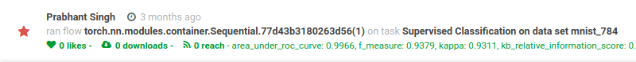

Releasing OpenML Deep learning libraries compatible with keras, pytorch and mxnet.
openml
deep learning
Published
May 6, 2020
Deep learning is facing a reproducibility crisis right now[1]. The scale of experiments and there are numerous hyperparameters that affect performance, which makes it hard for the author to write a reproducibility document. The current best way to make an experiment reproducible is to upload the code. However, that’s not optimal in a lot of situations where we have a huge undocumented codebase and someone would like to just reproduce the model. OpenML[2] is an online machine learning platform for sharing and organizing data, machine learning algorithms and experiments. Until now we only provided support for classical machine learning and libraries like Sklearn and MLR. We see there is a huge need for reproducible deep learning now. To solve this issue OpenML is launching its deep learning plugins for popular deep learning libraries like Keras, MXNet, and Pytorch.
Here we have a small tutorial on how to use our pytorch extension with MNIST dataset.
Setup To install openml and openml pytorch extension execute this instruction in your terminal pip install openml openml_pytorch
!pip install openml openml_pytorch
Collecting openml
Downloading https://files.pythonhosted.org/packages/68/5b/cd32bb85651eccebfb489cc6ef7f060ce0f62350a6239127e398313090cc/openml-0.10.2.tar.gz (158kB)
|██ | 10kB 28.5MB/s eta 0:00:01
|████▏ | 20kB 6.1MB/s eta 0:00:01
|██████▏ | 30kB 8.6MB/s eta 0:00:01
|████████▎ | 40kB 10.9MB/s eta 0:00:01
|██████████▎ | 51kB 7.2MB/s eta 0:00:01
|████████████▍ | 61kB 8.4MB/s eta 0:00:01
|██████████████▍ | 71kB 9.6MB/s eta 0:00:01
|████████████████▌ | 81kB 10.7MB/s eta 0:00:01
|██████████████████▌ | 92kB 8.5MB/s eta 0:00:01
|████████████████████▋ | 102kB 9.3MB/s eta 0:00:01
|██████████████████████▊ | 112kB 9.3MB/s eta 0:00:01
|████████████████████████▊ | 122kB 9.3MB/s eta 0:00:01
|██████████████████████████▉ | 133kB 9.3MB/s eta 0:00:01
|████████████████████████████▉ | 143kB 9.3MB/s eta 0:00:01
|███████████████████████████████ | 153kB 9.3MB/s eta 0:00:01
|████████████████████████████████| 163kB 9.3MB/s
Collecting openml_pytorch
Downloading https://files.pythonhosted.org/packages/5b/a4/8c69a041e7929d93460db17cf276abfb7b49af9c3d5077bee1c52101ba4c/openml_pytorch-0.0.1-py3-none-any.whl
Collecting liac-arff>=2.4.0
Downloading https://files.pythonhosted.org/packages/e9/35/fbc9217cfa91d98888b43e1a19c03a50d716108c58494c558c65e308f372/liac-arff-2.4.0.tar.gz
Collecting xmltodict
Downloading https://files.pythonhosted.org/packages/28/fd/30d5c1d3ac29ce229f6bdc40bbc20b28f716e8b363140c26eff19122d8a5/xmltodict-0.12.0-py2.py3-none-any.whl
Requirement already satisfied: requests in /usr/local/lib/python3.6/dist-packages (from openml) (2.21.0)
Requirement already satisfied: scikit-learn>=0.18 in /usr/local/lib/python3.6/dist-packages (from openml) (0.22.2.post1)
Requirement already satisfied: python-dateutil in /usr/local/lib/python3.6/dist-packages (from openml) (2.8.1)
Requirement already satisfied: pandas>=0.19.2 in /usr/local/lib/python3.6/dist-packages (from openml) (1.0.3)
Requirement already satisfied: scipy>=0.13.3 in /usr/local/lib/python3.6/dist-packages (from openml) (1.4.1)
Requirement already satisfied: numpy>=1.6.2 in /usr/local/lib/python3.6/dist-packages (from openml) (1.18.2)
Collecting torch==1.2.0
Downloading https://files.pythonhosted.org/packages/30/57/d5cceb0799c06733eefce80c395459f28970ebb9e896846ce96ab579a3f1/torch-1.2.0-cp36-cp36m-manylinux1_x86_64.whl (748.8MB)
|████████████████████████████████| 748.9MB 14kB/s
Requirement already satisfied: chardet<3.1.0,>=3.0.2 in /usr/local/lib/python3.6/dist-packages (from requests->openml) (3.0.4)
Requirement already satisfied: urllib3<1.25,>=1.21.1 in /usr/local/lib/python3.6/dist-packages (from requests->openml) (1.24.3)
Requirement already satisfied: certifi>=2017.4.17 in /usr/local/lib/python3.6/dist-packages (from requests->openml) (2020.4.5.1)
Requirement already satisfied: idna<2.9,>=2.5 in /usr/local/lib/python3.6/dist-packages (from requests->openml) (2.8)
Requirement already satisfied: joblib>=0.11 in /usr/local/lib/python3.6/dist-packages (from scikit-learn>=0.18->openml) (0.14.1)
Requirement already satisfied: six>=1.5 in /usr/local/lib/python3.6/dist-packages (from python-dateutil->openml) (1.12.0)
Requirement already satisfied: pytz>=2017.2 in /usr/local/lib/python3.6/dist-packages (from pandas>=0.19.2->openml) (2018.9)
Building wheels for collected packages: openml, liac-arff
Building wheel for openml (setup.py) ... done
Created wheel for openml: filename=openml-0.10.2-cp36-none-any.whl size=190318 sha256=50c2fd823d13904f246bf30997a2464379c393377cfd77f74b5dace4935db99c
Stored in directory: /root/.cache/pip/wheels/71/ec/5f/aaad9e184680b0b8f1a02ff0ec640cace5adf5bff7bb0af1b4
Building wheel for liac-arff (setup.py) ... done
Created wheel for liac-arff: filename=liac_arff-2.4.0-cp36-none-any.whl size=13335 sha256=fca5bc5e07e3fe4f591cbe79968a42e43f535b3bd3e4be77b62c901d46feaaa9
Stored in directory: /root/.cache/pip/wheels/d1/6a/e7/529dc54d76ecede4346164a09ae3168df358945612710f5203
Successfully built openml liac-arff
ERROR: torchvision 0.5.0 has requirement torch==1.4.0, but you'll have torch 1.2.0 which is incompatible.
Installing collected packages: liac-arff, xmltodict, openml, torch, openml-pytorch
Found existing installation: torch 1.4.0
Uninstalling torch-1.4.0:
Successfully uninstalled torch-1.4.0
Successfully installed liac-arff-2.4.0 openml-0.10.2 openml-pytorch-0.0.1 torch-1.2.0 xmltodict-0.12.0
Download the OpenML task for the mnist 784 dataset.
task = openml.tasks.get_task(3573)
Run the model on the task and publish the results on openml.org
run = openml.runs.run_model_on_task(model, task, avoid_duplicate_runs=False)run.publish()print('URL for run: %s/run/%d'% (openml.config.server, run.run_id))
URL for run: https://www.openml.org/api/v1/xml/run/10452577
By going to the published URL you can check the model performance and other metadata

We hope that openml deep learning plugins can help in reproducing deep learning experiments and provide a universal reproducibility platform for the experiments. Here are the links of all supported deep learning plugins right now:
MXNet: https://github.com/openml/openml-mxnet
Keras: https://github.com/openml/openml-keras
Pytorch: https://github.com/openml/openml-pytorch
ONNX: https://github.com/openml/openml-onnx
There are examples of how to use these libraries in the Github repos. These libraries are in the development stage right now so we would appreciate any feedback on Github issues of these libraries. Links: